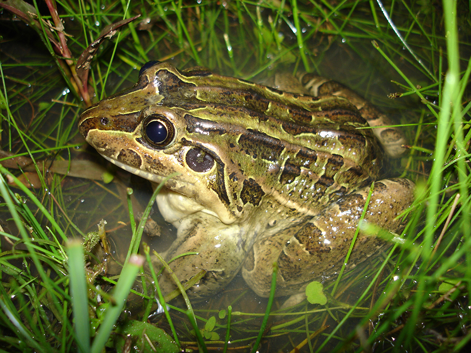

Rã de aproximadamente 10 cm, coloração pode variar entre esverdeado e marrom, com manchas arredondadas distribuídas pelo dorso, a maior delas entre os olhos. Ainda no dorso, tem várias pregas que vão da cabeça até a segunda metade do corpo. É uma espécie comum e comestível, sendo possível encontrar pessoas nas áreas rurais se alimentando dela. Bastante comum de ser encontrada, ocorre praticamente ao longo de todo o Brasil.
Apresenta uma pele bastante escorregadia, por isso o nome popular de rã-manteiga. Vive tanto em ambientes abertos quanto florestados, nas margens de lagoas, e ao ser perturbada pula rapidamente para a água. A fêmea protege a desova e os girinos durante algum tempo de intrusos e predadores. Os ovos são colocados na superfície da água, em um ninho de espuma. Alimenta-se principalmente de lagartas de borboletas e mariposas, besouros e aranhas.
